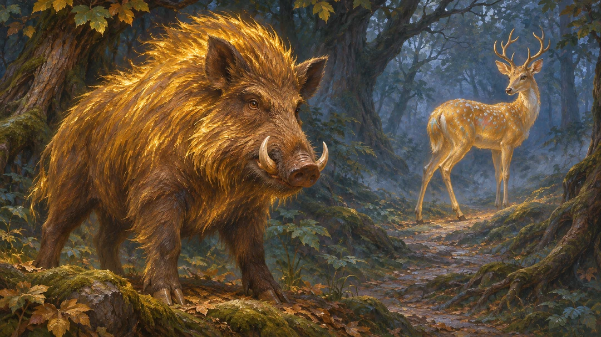

Kapitel 1
EnglishIngobert und die Erinnerung an einen Heiligen

Wie ihr wisst, unterschreibe ich alle meine Texte mit Michael/Mufti999. Wer Michael war oder ist, muss ich euch wohl nicht erklären. Mein zweiter Vorname ist aber Ingo. Dass in ihm ein Göttername steckt, habe ich erst vor Kurzem erfahren. Wer seiner Herkunft nachgeht, stößt auf eine alte germanische Namensfamilie. Ingo ist eine eigenständige Kurzform von Namen mit dem Bestandteil Ing-. Zu ihnen gehört auch Ingobert. Dieser Name führt ins saarländische St. Ingbert. Der Stadtname erinnert dort an einen Heiligen, von dessen Leben nur wenige, spät aufgezeichnete Berichte erzählen. Wie man sein Andenken bewahrte, lässt sich bis ins Mittelalter verfolgen. Zugleich stellt sich eine ältere Frage. Wer war Ing, dessen Name in Ingo und Ingobert weiterlebt? [1] [2] [3]
Ein Name mit langer Geschichte
Ingobert verbindet den Namensbestandteil Ing- mit dem althochdeutschen beraht, „hell“ oder „glänzend“. Auch in anderen Namen lebt dieses Wort als -bert oder -brecht fort. Das erste Glied ist mit dem alten Götternamen Ing verwandt, dem im Norden Yngvi entspricht. Was dieser Göttername ursprünglich bedeutete, bleibt ungewiss. Als Kurzform gehört Ingo zur großen Familie der Ing-Namen. Einer von ihnen ist Ingobert. Mit dem Heiligen, der ihn trug, haben wir einen Anhaltspunkt, um der sprachlichen Spur weiter zu folgen. [2] [4] [5]
Das älteste Zeugnis stammt aus Trier
Die Überlieferung setzt Ingobert in die Zeit des Trierer Bischofs Magnerich, der in der zweiten Hälfte des 6. Jahrhunderts amtierte. Das entscheidende Zeugnis wurde allerdings erst im frühen 11. Jahrhundert niedergeschrieben. Damals verfasste Eberwin, Abt von St. Martin in Trier und von Tholey, eine Lebensbeschreibung Magnerichs. Darin erscheint Ingobert unter frommen Männern, die im Waldgebiet des Vosagus gewirkt haben sollen. Im mittelalterlichen Verständnis konnte diese Landschaft weit über die heutigen Vogesen hinausreichen. So begegnet uns Ingobert zunächst als einer unter mehreren frommen Einsiedlern dieser Gegend, deren Andenken Eberwin für seine Zeit bewahrte. [6] [7] [8]
Mehr als vier Jahrhunderte liegen zwischen der angenommenen Lebenszeit Magnerichs und Eberwins Bericht. Dazu kommt der Zweck der Lebensbeschreibung. Sie ehrte Magnerich und würdigte die religiöse Vergangenheit seiner Gemeinschaft. Die späteren Gesta Treverorum griffen solche Berichte wieder auf. So wurde die Erzählung weitergetragen, ohne dass eine zweite zeitgenössische Bestätigung hinzukam. Schon 1956 warnte der Historiker Eugen Meyer davor, aus diesen späten Berichten eine verlässliche Geschichte der frühmittelalterlichen Mission an der Saar abzuleiten. Hinter der Überlieferung mag ein Mensch aus Fleisch und Blut stehen. Was er im Einzelnen tat, lässt sich daraus kaum noch zuverlässig erschließen. [9]
Die späteren Berichte erzählen Unterschiedliches über die Herkunft des Einsiedlers. Mal erscheint Ingobert als irischer Wandermönch, mal wird eine Herkunft aus dem fränkischen Adel vermutet. Dass er aus Irland stammte, lässt sich dem frühen Bericht jedoch nicht entnehmen. Wie die Abtei Tholey erläutert, nennt Eberwin Irland ausdrücklich als Herkunft Columbans. Für Ingobert und die übrigen Heiligen in diesem Zusammenhang lässt er die Frage offen. Die Vorstellung, sie seien als Gruppe von Irland an die Saar gezogen, schmückt seine Erzählung also nachträglich aus. [7] [10] [11]
Die Welt der Einsiedler
Die Zeit, in die man Ingobert setzt, ist deutlicher zu erkennen als er selbst. Magnerich gehörte zur Führung der fränkischen Kirche und hatte Verbindungen zum merowingischen Königshaus. Gregor von Tours kannte ihn persönlich. Die christliche Kirche hatte also längst Bischöfe und politische Beziehungen. Auf dem Land konnten die religiösen Verhältnisse von Ort zu Ort sehr verschieden sein. Hier begegnen uns Menschen, die durch ein ungewöhnlich strenges Leben religiöse Autorität gewannen und gerade damit auch in Konflikt mit den zuständigen Bischöfen gerieten. [6] [12]
Ein solcher Mann war Wulfilaich, von dem Gregor von Tours ausführlich erzählt. Im Westen des Bistums Trier hatte er eine Säule errichtet, auf der er selbst der Winterkälte trotzte. In seiner Nähe verehrte man noch eine Göttin, die Gregor Diana nennt. Wulfilaich predigte gegen ihre Verehrung und beteiligte sich an der Zerstörung ihres Standbilds. Schließlich zwangen ihn Bischöfe, von der Säule herabzusteigen. Magnerich ließ sie abtragen. An Gregors Bericht lässt sich ermessen, wie gespannt das Verhältnis zwischen örtlicher Frömmigkeit und kirchlicher Ordnung sein konnte. Er erzählt hier Wulfilaichs Geschichte. Für Ingobert gibt sie uns den zeitlichen Rahmen, doch über sein eigenes Leben erfahren wir daraus nichts weiter. [13] [12]
Eine Klause und die Landschaft ihrer Sagen
Die örtliche Überlieferung verbindet Ingobert mit einer Einsiedelei. Als möglicher Ort gilt die Gegend um den Heiligenbrunnen beim Alten Friedhof. Dort soll er in bescheidenen Verhältnissen gelebt haben. Das Quellwasser und die kleine Behausung ganz in der Nähe ergeben ein anschauliches Bild vom Einsiedler, das sich gut weitererzählen lässt. An der Quelle wird die Erinnerung an einen Menschen, von dem wir so wenig wissen, in der Landschaft greifbar. Wo seine Klause tatsächlich stand, lässt sich daraus heute nicht mehr bestimmen. [10] [14]
Andere Erzählungen bringen Ingobert mit dem Stiefelfelsen bei St. Ingbert in Verbindung. Um diese Landschaft ranken sich weitere Geschichten. Einer Sage zufolge haust hier der Riese Kreuzmann, der Menschen verschleppt und verschlingt. Am Tisch des Riesen sollen Elfen getanzt haben. Wer Sagen liest oder Rollenspielabenteuer schreibt, wird schon wegen der Nähe dieser Schauplätze hellhörig. Dass die Geschichten in derselben Gegend spielen, belegt allerdings weder eine Begegnung zwischen Ingobert und dem Riesen noch einen früheren Kult des Gottes Ing an diesem Felsen. [15] [16] [17]
Gerade darin steckt eine Möglichkeit für die Fantasy. Um einen Ort können sich mehrere Erzählungen ranken, deren Verhältnis zueinander ungeklärt ist. Die Menschen einer erfundenen Stadt könnten einen Heiligen verehren, während Wanderer im selben Wald eine ältere Sage erzählen. Ein Abenteuer könnte davon handeln, wie jemand versucht, diese Überlieferungen miteinander zu verbinden. Die Verbindung wäre eigens für das Spiel erfunden. Die wirklichen Sagen um St. Ingbert liefern dafür Motive und Schauplätze. Eine gemeinsame Handlung geben sie noch nicht vor. [16]
Wie der Heilige der Stadt seinen Namen gab
Die Siedlung, aus der St. Ingbert hervorging, erscheint erstmals 888 in einer Urkunde. Damals hieß sie Lendelfingen, überliefert ist die lateinische Form Lantolvinga. Mit dieser ersten Erwähnung beginnt also eine andere Geschichte ihres Namens. Erst in späteren Schriftzeugnissen tritt Ingobert als Namensgeber hervor. Von der Erinnerung an einen frühmittelalterlichen Einsiedler bis zu dem Ort, der nach ihm heißt, ist es ein langer Weg. Nur einzelne Stationen lassen sich noch nachzeichnen. [3] [14]
Für 1174 ist eine Namensform bezeugt, die sich auf den Heiligen bezieht. Der ältere Name Lendelfingen blieb daneben noch lange in Gebrauch. Hier zeigt sich, was die Verehrung bewirken konnte. Ein Name, an dem sich das religiöse Leben orientierte, konnte allmählich zur Bezeichnung eines ganzen Ortes werden. Das sagt etwas über die Menschen aus, die diesen Namen benutzten, und über die Bedeutung, die Ingobert für sie hatte. Dass er die Siedlung gegründet hätte, ist dafür keine Voraussetzung. Wann seine Verehrung vor Ort begann, verrät uns der Name ebenfalls nicht. [3]
Verehrung und Heiligsprechung
Ein Datum für eine förmliche Heiligsprechung Ingoberts lässt sich aus den verfügbaren Quellen nicht ermitteln. Belegt ist vor allem seine örtliche Verehrung. Weder ein päpstliches Dekret noch eine datierte bischöfliche Entscheidung sind überliefert. Bei Ingobert lässt sich also verfolgen, dass er im Ruf der Heiligkeit stand. Der Beginn seiner Verehrung und die einzelnen Schritte zur kirchlichen Anerkennung bleiben im Dunkeln. [9] [14]
Im frühen Mittelalter nahm die Verehrung eines Heiligen oft in einer örtlichen Gemeinschaft ihren Anfang. Wer als besonders fromm gegolten hatte, konnte nach dem Tod zum Vorbild und Fürsprecher werden. Die Bischöfe wachten über solche Kulte und konnten ihre liturgische Feier gestatten. Gelegentlich wurde die Anerkennung durch die Erhebung oder Übertragung der Reliquien öffentlich sichtbar. Das heute bekannte, zentral geregelte päpstliche Verfahren entstand erst im Lauf von Jahrhunderten. Daher lässt sich für einen frühmittelalterlichen Heiligen nicht unbedingt ein Datum der Heiligsprechung angeben, wie wir es heute kennen. [18] [19]
Ingoberts Ruf als Heiliger gründet in der Überlieferung vor allem auf dem Bild des frommen Einsiedlers. Eberwin zählt ihn zu den viri magnae sanctitatis, den Männern von großer Heiligkeit. In seiner religiösen Erzählung würdigt er damit die Lebensweise, die er Ingobert zuschreibt. Welche Taten diesen Ruf ursprünglich begründeten, wissen wir nicht. Eine Heiligsprechung aufgrund bestimmter, kirchlich geprüfter Wunder lässt sich für ihn nicht belegen. Dass uns sein Leben heute weitgehend verschlossen ist, schmälert die Bedeutung nicht, die ihm die Menschen des Mittelalters beimaßen. [9]
Zeitlich lassen sich zwei Punkte festhalten. Im frühen 11. Jahrhundert erscheint Ingobert bereits in einer Überlieferung über heilige Einsiedler. Für 1174 ist sein Heiligenname im Ortsnamen Sancto Ingebrechto greifbar. Spätestens damals hatte er also religiöse Bedeutung erlangt. Wann er sie gewann, bleibt offen. Auch der 22. Oktober bezeichnet seinen Gedenktag im Kalender. Ein Datum der Heiligsprechung ist für diesen Tag nicht überliefert. [8] [3] [14]
Ein Heiliger in der Gegenwart
Auch in der Kirche ist die Erinnerung an Ingobert lebendig geblieben. In St. Ingbert gibt es heute die katholische Pfarrei Heiliger Ingobertus. Zu ihren Kirchen gehört die Alte Kirche St. Engelbert. Ingoberts Gedenktag wird am 22. Oktober gefeiert. So wenig wir über das Leben des Einsiedlers wissen, so unmittelbar begegnet er uns in solchen Namen und in den jährlich wiederkehrenden Gedenktagen. Wer ihn verehrt, knüpft an eine örtliche Erinnerung an, die seit vielen Generationen weitergetragen wird. [20] [21] [14]
Außerhalb des Gottesdienstes lebt der Name im Ingobertusfest fort. Auch um seine Darstellung im öffentlichen Raum wurde gerungen. Die Stadt würdigt Elke Sonn dafür, dass sie sich für die Wiederaufstellung einer Ingobertus-Skulptur eingesetzt hat. 2019 veröffentlichte sie den Band Ingobertus. Vom Pilger zum Patron. Darin stehen literarische Deutungen neben Beiträgen zur Geschichte der Heiligenverehrung. So beschäftigen sich die Menschen bis heute mit Ingobert. Sie bewahren seinen Namen, geben ihm ein sichtbares Gesicht und erzählen seine Geschichte aus ihrer eigenen Zeit heraus. [22] [23] [24]
Vom Heiligen zurück zu Ing
Auf der Suche nach der Herkunft meines zweiten Vornamens bleibt Ingobert damit eine Station in einer längeren Namensgeschichte. In seinem Namen steckt ein Bestandteil, der mit dem vorchristlichen Ing in Verbindung gebracht wird. Diese sprachliche Spur führt zur nächsten Frage. Was ist von diesem Ing überliefert? Im nächsten Beitrag führt die Suche von einem altenglischen Runengedicht zum nordischen Yngvi-Freyr. Dort begegnen uns erheblich ausführlichere Geschichten, darunter die von einem außergewöhnlichen Schiff und einem Schwert, dessen Verlust am Ende tödliche Folgen hat. [4] [25] [26]
Kapitel 2
EnglishIng und Freyr
Ein alter Göttername und der Preis einer Gabe
Die Suche nach meinem zweiten Vornamen hat mich zunächst zu Ingobert geführt, dem Heiligen, an den die Stadt St. Ingbert erinnert. In seinem Namen steckt jedoch ein Bestandteil, dessen Geschichte weiter zurückreicht. Er lautet Ing. In der nordischen Überlieferung begegnet uns der verwandte Name Yngvi. Auch der Gott Freyr trägt ihn. Die Forschung bringt diese Namen und ihre Träger miteinander in Verbindung. Wer der Spur folgt, durchquert sehr unterschiedliche Quellen, vom Bericht eines Römers über germanische Herkunftserzählungen bis zu den Mythen des mittelalterlichen Island. [4] [25]
Die wenigen Spuren des frühen Ing
Im zweiten Kapitel seiner Germania berichtet Tacitus von Herkunftsliedern, in denen die Germanen einen erdgeborenen Gott namens Tuisto und dessen Sohn Mannus besangen. Nach drei Söhnen des Mannus sollen größere Volksgruppen benannt worden sein. Die Bewohner der Küstenregion nennt Tacitus Ingaevones. Die Namen der drei Söhne nennt er nicht. Erst der Vergleich mit anderen Überlieferungen lässt einen möglichen Zusammenhang zwischen den Ingaevones und Ing erkennen. Tacitus gibt der Forschung damit einen frühen Ansatzpunkt. Ing selbst bleibt in seinem Text ungenannt. [27] [25]
Ein altenglisches Runengedicht zeichnet ein deutlicheres Bild. In der Strophe zur Rune Ing heißt es, dass Ing zuerst bei den Ostdänen gesehen wurde. Später fuhr er über das Wasser fort, ein Wagen folgte ihm. Die Heardingas sollen dem Helden diesen Namen gegeben haben. Es ist eine eigentümlich knappe Szene. Seine Ankunft wird vorausgesetzt, über den Anlass seiner Abreise erfahren wir nichts. Auch wie der Wagen und die Fahrt übers Meer zusammenhängen, erklärt die Strophe nicht. Offenbar bewahrt sie ein Stück einer Erzählung, die ihr Publikum wiedererkannte und deren Zusammenhang uns heute weitgehend verloren ist. [28]
Die erschlossene ältere Namensform wird oft *Ingwaz geschrieben. Das vorangestellte Sternchen kennzeichnet in der Sprachwissenschaft eine Rekonstruktion. Ing und das altnordische Yngvi gehören zur selben sprachlichen Familie. Damit lässt sich die Herkunft der Namen verfolgen, auch wenn die einzelnen Zeugnisse zeitlich und räumlich weit auseinanderliegen. Die ausführlichen Geschichten von einem wundersamen Schiff und einem Schwert, das von selbst kämpft, begegnen uns erst in der nordischen Überlieferung zu Freyr. Wer nach ihrer Herkunft fragt, muss also dort beginnen. [4] [26]
Yngvi wird zum Herrn
Ausdrücklich verbindet die Ynglinga saga die beiden Namen. Freyr habe auch Yngvi geheißen, und von diesem Namen leite sich die Bezeichnung seiner Nachkommen, der Ynglingar, ab. Die Saga gehört zur Heimskringla, die im 13. Jahrhundert entstand und Snorri Sturluson zugeschrieben wird. Sie erzählt von den Göttern als Herrschern der Vorzeit und verknüpft ihre Geschichten mit den Anfängen eines Königsgeschlechts. Yngvi und Freyr werden hier ausdrücklich gleichgesetzt. Auch wozu das dient, ist erkennbar. Die Erzählung gibt einer Herrscherfamilie einen göttlichen Ahnherrn. [29]
Zu dieser Stellung passt auch der Name Freyr. Meist wird er als „Herr“ erklärt und auf eine ältere Form *Fraujaz zurückgeführt. Aus einer ehrenden Anrede könnte im Lauf der Zeit der Name des Gottes geworden sein. Der Religionshistoriker Olof Sundqvist betont, wie gut sich diese Deutung mit Freyrs Verhältnis zur politischen Macht verträgt. Wer ihn auf die Rolle eines „Fruchtbarkeitsgottes“ beschränkt, übersieht leicht seine Bedeutung als Herrscher und Friedensstifter. In den Quellen hängt von der Gunst dieses Gottes auch ab, wie gut die Menschen unter einem bestimmten Herrscher leben. [30]
In der nordischen Götterwelt ist Freyr der Sohn Njörðrs und der Bruder Freyjas. Er gehört zu den Wanen, die in den Erzählungen mit den Asen verbunden sind. Snorri beschreibt seine Macht in der Gylfaginning ganz konkret. Freyr gebietet über Regen und Sonnenschein und damit über den Ertrag der Erde. Um gute Ernten und Frieden soll man ihn anrufen, und auch über den Wohlstand der Menschen hat er Macht. „Fruchtbarkeit“ bekommt hier einen weiten Sinn. Das Wort umfasst die Bedingungen, unter denen eine Gemeinschaft sich ernähren und fortbestehen kann. [26] [31]
Die Verbindung von Ertrag und Frieden wirft eine politische Frage auf. Was ist ein Herrscher wert, unter dem die Menschen ihr Auskommen verlieren? In Freyrs Welt sind die Erwartungen an göttliche Gunst und menschliche Führung eng miteinander verschränkt. Für eine Fantasywelt ist das ein reizvoller Ausgangspunkt. Ein König könnte seinen Herrschaftsanspruch von Freyr ableiten und gerade deshalb bei einer Missernte in Bedrängnis geraten. Dieser König ist meine Erfindung. Der historische Zusammenhang, den ich damit aufgreife, ist derjenige, den Sundqvist in den Quellen untersucht. [30]
Uppsala und die Hoffnung auf ein gutes Jahr
Ein wichtiges Zeugnis für den schwedischen Kult stammt von Adam von Bremen. Im 11. Jahrhundert beschreibt er das Heiligtum von Uppsala und nennt dort eine Gottheit namens Fricco, die gewöhnlich mit Freyr gleichgesetzt wird. Fricco gewähre Frieden und Lust, und bei Hochzeiten habe man ihm Opfer dargebracht. Adam schrieb als Christ und hatte Uppsala nie selbst besucht. Seine Angaben erreichen uns durch den Blick eines religiösen Außenstehenden. Anders Hultgård zeigt, weshalb man den möglichen historischen Gehalt ebenso ernst nehmen muss wie die literarischen Vorbilder und die Schwierigkeiten der Überlieferung. [32]
Eine kleine Bronze aus dem schwedischen Rällinge gibt der Diskussion einen anschaulichen Gegenstand. Sie zeigt einen nackten, sitzenden Mann mit auffälligem Phallus, spitzer Kopfbedeckung und einer Hand am Bart. Das Historische Museum in Stockholm deutet die Figur als Freyr. Die Darstellung seines Körpers passt zu den Vorstellungen von Zeugungskraft und Fruchtbarkeit, die mit dem Gott verbunden sind. Die Identifizierung bleibt eine wissenschaftliche Deutung. Das Stück macht dennoch anschaulich, wie viel von einer religiösen Vorstellung schon in einem Körper und seiner Haltung zum Ausdruck kommen konnte. [33]
Die Ynglinga saga erzählt, dass der Wohlstand des Landes selbst nach Freyrs Tod noch an ihm hing. Als er starb, verheimlichten seine Leute seinen Tod. Sie legten seinen Leichnam in einen Hügel und brachten weiterhin die Abgaben dorthin. Weil die guten Jahre anhielten, bewahrten sie seinen Leib auch später und opferten ihm für gute Ernten und Frieden. Die Episode gehört zur literarischen Geschichte des göttlichen Königs. Was mich an ihr besonders beschäftigt, ist diese fortdauernde Abhängigkeit. Solange das Land gedeiht, soll die Ordnung, für die Freyr bürgt, selbst mit seinem Tod nicht enden. [29]
Eine weitere Verbindung findet sich im Eddalied Grímnismál. Es nennt Álfheimr, die Heimat der Elfen, als Gabe, die Freyr zu seinem ersten Zahn erhielt. Die Vorstellung ist häuslich und ungeheuerlich zugleich. Einem Kind wächst ein Zahn und es bekommt dafür eine ganze göttliche Landschaft geschenkt. Das stellt eine Verbindung zwischen Freyr und den Elfen her, über deren nähere Umstände der knappe Vers nichts verrät. Wer Álfheimr später als eigenes Reich mit Hofstaat und festen Ämtern ausmalt, spinnt diesen Hinweis bereits schöpferisch weiter. [34]
Gerðr und das verschenkte Schwert
Im Eddalied Skírnismál nimmt Freyr auf Hliðskjálf Platz. So heißt Odins Hochsitz in Asgard. Von dort kann Odin, wie Snorri erzählt, die ganze Welt überblicken. Freyrs Blick fällt auf Jötunheim, das Land der Riesen. Dort erblickt er Gerðr, die Tochter Gymirs. Ihr Anblick nimmt ihn so gefangen, dass er sich zurückzieht. Sein Diener Skírnir erfährt den Grund und erhält den Auftrag, zu ihr zu reisen. Dafür verlangt er Freyrs Pferd und sein besonderes Schwert, das von selbst kämpfen kann. Freyr gibt beides her. Noch vor der Begegnung mit Gerðr hat sein Verlangen ihn damit eine Waffe gekostet, deren Bedeutung weit über diese Reise hinausreichen wird. [35] [34] [31]
Gerðr weist Skírnirs Angebote zurück. Weder elf goldene Äpfel noch ein wunderbarer Ring können sie umstimmen. Darauf folgen Todesdrohungen und ein Fluch, der ihr Elend und den Ausschluss aus der menschlichen Gemeinschaft in Aussicht stellt. Erst nach dieser Eskalation verspricht sie, sich nach neun Nächten mit Freyr zu treffen. Für das Verständnis des Gedichts kommt es auf diese Reihenfolge an. Gerðr willigt unter Zwang ein. Skírnir handelt als Bote, den Freyr entsandt und ausgerüstet hat. Wer hier nur von einer erfolgreichen Brautwerbung erzählt, übergeht den Konflikt, der das Lied bestimmt. [35] [34]
Im Streitgedicht Lokasenna hält Loki Freyr seine Entscheidung vor. Er wirft ihm vor, Gymirs Tochter mit Gold gekauft und dafür sogar sein Schwert hingegeben zu haben. Wenn Muspells Söhne kämen, werde ihm die Waffe fehlen. Hier spricht ein Gegner, der mit seinen Worten verletzen will. Wer eine unbeteiligte Zusammenfassung der Brautwerbung sucht, findet sie bei Loki kaum. Sein Spott zeigt jedoch, dass Freyrs Verlust schon in der Überlieferung selbst einen wunden Punkt trifft. Der Gott, von dem sich die Menschen Wohlergehen erhoffen, bleibt an die Folgen seines eigenen Handelns gebunden. [34]
Was am Ende fehlt
Snorri erzählt diese Geschichte weiter. Nachdem Freyr sein Schwert hergegeben hat, erschlägt er den Riesen Beli mit einem Hirschgeweih. Bei Ragnarök tritt er schließlich Surtr entgegen und fällt. Die Gylfaginning führt seinen Tod ausdrücklich auf das fehlende Schwert zurück. Was er einst verschenkte, fehlt ihm im entscheidenden Augenblick. Doch Freyr kann noch immer handeln und stellt sich dem Kampf. Gerade diese Verbindung von göttlicher Macht und einer unumkehrbaren Entscheidung macht seine Geschichte für mich so interessant. [31]
Freyrs Gaben als Ausgangspunkt für weitere Geschichten
Zu Freyrs Besitz gehört auch Skíðblaðnir. Das Grímnismál nennt die Söhne Ívaldis als seine Erbauer. Snorri beschreibt ein Schiff, das die Götter samt ihrer Ausrüstung tragen kann, beim Segeln günstigen Wind bekommt und sich anschließend zusammenfalten und in einem Beutel verstauen lässt. Schon in seiner Bauweise steckt eine ganze Abenteueridee. Die Möglichkeit zu einer großen Seereise lässt sich unauffällig bei sich tragen. Für eine Spielwelt hätte das weitreichende Folgen. Schon die Frage, wer Zugang zu diesem Schiff bekommt, könnte wichtiger werden als jede einzelne Seeschlacht. [34] [31]
Gullinbursti, der Eber mit den goldenen Borsten, entsteht in einem Wettstreit unter Zwergen. Brokkr und sein Bruder fertigen ihn als eine ihrer Gaben an. Freyr erhält das Tier. Es kann durch Luft und Wasser laufen und seine goldenen Borsten leuchten selbst im Dunkeln. Das Wunder ist hier ein lebendiger Gefährte. In einer späteren Umsetzung fürs Rollenspiel verdient der Eber deshalb einen eigenen Charakter und eine eigene Beziehung zu seinem Herrn. Seine Herkunft aus der Werkstatt lädt außerdem zu der Frage ein, welche Ansprüche seine Schöpfer stellen. [31] [36]
Die Herkunft meines Namens führt also zu einer Gestalt, von der sehr unterschiedliche Geschichten erzählen. Ing fährt in wenigen Versen übers Meer. Yngvi-Freyr steht in ausführlicheren nordischen Texten für ein gutes Leben und eine geordnete Herrschaft. Über die verwandten Namen lässt sich das eine neben das andere stellen, ohne die Unterschiede zu verwischen. Am Ende beschäftigt mich besonders das Schwert. Ein Gott gibt etwas her, weil ihm in diesem Augenblick ein anderer Wunsch wichtiger ist. Viel später bestimmt das, was ihm fehlt, seinen Tod. Hier beginnt für mich die nächste Geschichte. [28] [29] [34]
Kapitel 3
EnglishFreyrs verlorenes Schwert

Besitz, Verzicht und die Folgen einer Gabe
Freyr gibt seinem Boten ein Schwert, das von selbst kämpfen kann. Damit ermöglicht er die Werbung um Gerðr. Die Folgen dieser Gabe reichen bis zum Untergang der Götterwelt. Als Freyr Surtr gegenübertritt, fehlt ihm die Waffe. Für eine Geschichte über magische Gegenstände ist das ein ungewöhnlicher Ausgangspunkt. Was bleibt von einer Entscheidung, wenn der Zweck, für den sie einst getroffen wurde, längst erfüllt ist? [31]
Ein Schwert, das von selbst kämpft
Im Skírnismál verlangt Skírnir für seine Reise ein Pferd und das Schwert, das gegen das Geschlecht der Riesen kämpft. Freyr gewährt ihm beides, knüpft an das Schwert aber eine Bedingung. Wer es besitzt oder führt, muss horskr sein, also klug oder einsichtig. Edward Pettit übersetzt das Wort mit „wise“. Ein eindeutiger Prüfstein für moralische Würdigkeit folgt daraus nicht. Die Waffe verlangt Urteilskraft. An welchem konkreten Handeln sie sich erweist, erklärt das Gedicht nicht. [37] [38]
Auch über das Aussehen des Schwerts erfahren wir etwas. Skírnir beschreibt die Klinge als schmal und verziert. Das altnordische málfáan könnte auf eine gemusterte Oberfläche oder farbige Zeichnungen hindeuten. Ausdrücklich hält er die Waffe in der Hand. Das spricht für selbständiges Kämpfen, lässt aber keinen Schluss auf freien Flug zu. Auch von einem Schmied, einem besonderen Metall oder garantierter Unzerstörbarkeit ist an diesen Stellen keine Rede. Schon die Behauptung, das Schwert sei jedem denkbaren Gegner sicher überlegen, ginge über den Text hinaus. [37]
Durch Freyrs Entscheidung bekommt die geforderte Klugheit einen bitteren Beigeschmack. Alicia Maddalena liest die Weitergabe als Ironie. Freyr besitzt eine Waffe für einen klugen Besitzer und gibt sie im Bann seines Verlangens fort. So deutet Maddalena die Stelle. Eine ausdrückliche Lehre formuliert das Gedicht hier nicht. Ihre Lesart lenkt den Blick jedoch auf eine Frage, die ich auch am Spieltisch stellen würde. Kann eine Entscheidung im Augenblick vernünftig erscheinen und einem dennoch die eigene Zukunft verbauen? [38]
Die Werbung um Gerðr
Von seinem Hochsitz Hliðskjálf aus sah Freyr Gerðr und begehrte sie. Skírnir unternahm die Reise ins Land der Riesen. Ihm, dem Boten, wurde das Schwert übergeben. Von einer direkten Übergabe an Gerðr erzählt die Geschichte ebenso wenig wie von einer ausdrücklich vereinbarten Leihgabe. Bei Snorri macht Skírnir den Erhalt der Waffe zur Bedingung dafür, dass er den Auftrag ausführt. [35] [31]
Gerðr wies die goldenen Äpfel und den kostbaren Ring zurück. Selbst Skírnirs Drohung, ihr den Kopf abzuschlagen, konnte sie zunächst nicht umstimmen. Es folgten Drohungen gegen ihren Vater und eine lange Fluchrede, die ihr ein Leben voller Leid und Ausgrenzung ausmalte. Erst danach sagte sie dem Treffen zu. Carolyne Larrington hat gezeigt, wie sehr sich die Geschichte verändert, wenn man sie aus Gerðrs Sicht liest. Eine Frau soll sich dem Begehren eines Mannes fügen, den sie anfangs ausdrücklich zurückweist. [35] [39]
Der Fluch gehört zu Skírnirs Vorgehen. Daraus lässt sich nicht ohne Weiteres auf eine weitere Fähigkeit der Klinge schließen. Neben dem Schwert nennt das Gedicht einen gambanteinn, einen zauberkräftigen Zweig oder Stab, und das Ritzen von Runen. Wie diese Gegenstände und Handlungen zusammenhängen, ist eine Frage der Deutung. „Erzwingt Liebe“ sollte daher in einer Artefaktbeschreibung nicht als überlieferte Kraft des Schwertes stehen. [35] [25]
Was aus der Verabredung wurde
Gerðr bestimmte den Hain Barri zum Treffpunkt und setzte eine Frist von neun Nächten. Skírnir kehrte zurück und überbrachte Freyr ihr Versprechen. Freyr klagte, wie schwer es ihm falle, auch nur wenige Nächte zu warten. Damit endet das Lied. Von der Begegnung selbst, einem Hochzeitsfest oder einem Gespräch zwischen den beiden erzählt das Skírnismál nichts. [37]
Andere Texte bestätigen allerdings die Verbindung. In Strophe 30 des Hyndluljóð heißt es ausdrücklich, Freyr habe Gerðr geheiratet. Die Ynglinga saga nennt sie seine Frau und Fjölnir ihren Sohn. Die Überlieferung reicht also über ein versprochenes Treffen hinaus. Sie kennt eine Ehe und ein gemeinsames Kind. Was Gerðr in dieser Ehe empfand oder wie das Paar den Alltag verbrachte, erfahren wir an diesen Stellen nicht. [37] [29]
Daraus lässt sich im Rückblick keine versöhnliche Liebesgeschichte machen. Larrington weist darauf hin, dass Snorris kürzere Darstellung die Drohungen und den Fluch auslässt. Ehe und Kind lassen die Verbindung bei ihm selbstverständlich erscheinen. Auch sollten wir die Texte nicht zu einer lückenlosen Lebensgeschichte zusammenfügen. Die Ynglinga saga erzählt von Freyr als Herrscher, der einer Krankheit erliegt. Sie geht anders mit dem Stoff um als die Erzählung von seinem Tod bei Ragnarök. [39] [29]
Die letzte sichere Spur des Schwertes
Was aus der Waffe wurde, lässt sich nur ein Stück weit verfolgen. Freyr gibt sie Skírnir, und Skírnir führt sie, als er Gerðr begegnet. Von einer weiteren Übergabe erzählen die maßgeblichen Texte nichts Eindeutiges. Dort gibt es keine gesicherte Geschichte, nach der Gerðr das Schwert bekommt, ihr Vater es verwahrt oder Skírnir es einem späteren Helden übergibt. Auch von einer Rückkehr zu Freyr wird nichts erzählt. [35] [25]
Einen weiteren Hinweis gibt Lokis Spott in der Lokasenna. Er wirft Freyr vor, Gymirs Tochter mit Gold gekauft und dabei sein Schwert hergegeben zu haben. Zugleich erinnert er ihn an den bevorstehenden Angriff der Söhne Múspells. Die Strophe sagt nicht, wer das Schwert erhielt. Zudem weist Gerðr die angebotenen Schätze im Skírnismál zurück. Lokis Schmährede ist also ein schlechter Ersatz für einen Kaufvertrag, aus dem man die fehlenden Stationen im Weg der Waffe ablesen könnte. [35] [25]
Auch die Vorstellung, Freyr werde zuletzt mit dem eigenen Schwert getötet, geht über den eindeutigen Quellenbefund hinaus. Die Völuspá schildert Surtr mit einer leuchtenden Waffe und anschließend Freyrs Kampf gegen ihn. Sie bezeichnet diese Waffe an keiner Stelle als Freyrs früheres Eigentum. Wer beides gleichsetzt, hat vielleicht eine reizvolle Deutung oder eine starke Wendung für die eigene Geschichte gefunden. Als gesicherte Station auf dem Weg des Schwertes lässt sie sich nicht angeben. [35] [31]
Namen und weitere Überlieferungen
An den für diese Geschichte einschlägigen Stellen bleibt Freyrs Schwert namenlos. Die geläufige Bezeichnung Sumarbrandr oder Sumarbrander sollte man daher ohne zusätzlichen historischen Beleg nicht als eddischen Eigennamen verwenden. Eindeutig belegt ist der moderne Gebrauch von Sumarbrander in Rick Riordans The Sword of Summer. Das bezeugt die heutige Verwendung. Wer den Namen zuerst geprägt hat, ist damit noch nicht geklärt. [35] [31] [40]
Lævateinn führt zu einer anderen rätselhaften Waffe. Im Fjölsvinnsmál wird eine Waffe dieses Namens erwähnt, die Loftr mit Runen gefertigt hat und die bei Sinmara unter neun Verschlüssen liegt. An dieser Stelle geht es darum, wie sich der Hahn Víðópnir töten ließe. Weder Freyr noch Skírnir werden als Besitzer genannt. Wer Lævateinn mit Freyrs Schwert gleichsetzt, führt also zwei Überlieferungen zusammen, deren Zusammengehörigkeit der Text selbst nicht bestätigt. [35]
Wer weiter nachlesen möchte, dem empfehle ich Edward Pettits The Waning Sword. Pettit untersucht mögliche Verbindungen zwischen der Werbung um Gerðr und Beowulfs Begegnung mit Grendels Mutter. Auch die Waffen der beiden Erzählungen vergleicht er miteinander. Dabei kommen reizvolle Motive und mögliche ältere Zusammenhänge zum Vorschein. Es bleiben Rekonstruktionen aus verstreuten Texten. Eine wiederentdeckte Erzählung, die das weitere Schicksal von Freyrs Schwert vollständig aufklärt, liegt uns damit noch nicht vor. [25]
Der Tod kommt später
Zunächst findet Freyr Ersatz für die fehlende Waffe. Snorri erzählt, dass er Beli mit einem Hirschgeweih tötet. Sein Verzicht macht ihn also nicht sofort wehrlos. Erst im Kampf gegen Surtr wird ihm die einstige Gabe zum Verhängnis. Snorri führt Freyrs Untergang ausdrücklich darauf zurück, dass ihm das gute Schwert fehlt, das er Skírnir gab. Einen sicheren Sieg mit dem Schwert verbürgt diese Aussage gleichwohl nicht. [31]
Gerade der zeitliche Abstand trägt zur Tragik bei. Lange scheint der Verzicht folgenlos zu bleiben, und spätere Erfolge können einem in der Entscheidung sogar noch recht geben. Dann kommt eine Situation, in der genau die verlorene Möglichkeit entscheidend gewesen wäre. Fürs Rollenspiel lässt sich daraus eine feste Schicksalsregel entwickeln. Dass jeder frühere Besitzer nach Verkauf, Schenkung oder Verlust sterben muss, ist allerdings unsere Erweiterung. Einen solchen allgemeinen Fluch formulieren die Quellen nicht. [31] [34]
Stormbringer und Mournblade. Wenn die Waffe ihren Träger beherrscht
Auch Michael Moorcocks Stormbringer und Mournblade kämpfen mit einem eigenen Willen. In Elric of Melniboné führt Elric Stormbringer, sein Vetter Yyrkoon führt Mournblade. Im Duell scheinen die Schwerter ihren eigenen Kampf auszutragen. Ihre Träger kämpfen mit und können dabei selbst zu Waffen werden. Die Grenze zwischen einer Waffe in der Hand ihres Trägers und einer Macht, die ihn ihrerseits führt, verschwimmt. [41] [42]
Was ein mächtiger Träger hier ist, bedarf einer Präzisierung. Elric verfügt über beträchtliche Zaubermacht, ist körperlich aber schwach und zunächst auf besondere Mittel angewiesen, um bei Kräften zu bleiben. Stormbringer gibt ihm die Kraft, die seinem Körper fehlt. Außergewöhnliche Körperkraft setzt das Schwert also nicht voraus. Gerade seine Hilfe macht die Bindung gefährlich. Wer seine Kraft aus einer Waffe bezieht, verliert bei der Trennung mehr als ein besonders wertvolles Stück seiner Ausrüstung. [43] [42]
Diese Kraft stammt aus geraubtem Leben und verzehrten Seelen. Moorcock selbst erklärt Stormbringers Seelenhunger aus Elrics Bedürfnis nach Lebenskraft und der symbiotischen Beziehung zwischen den beiden. Auch Mournblade gehört zu diesem bedrohlichen Gefüge. Im Duell fürchtet Elric, das Schwert werde seine Seele in sich ziehen und seine Kraft werde Yyrkoon zugutekommen. Den Preis der Macht zahlen also zunächst die Opfer. Der Träger profitiert davon und geht zugleich eine Bindung ein, deren Forderungen er immer weniger beherrscht. [41] [44]
Schon bei der Begegnung der beiden schwarzen Schwerter versucht Elric, sich diesem Willen zu widersetzen. Als die Klinge Yyrkoon töten will, hält er Stormbringer zurück. Für den Vergleich gibt diese Szene mehr her als die bloße Feststellung „Das Schwert kämpft allein“. Der Träger muss sich gegen eine Waffe behaupten, die ihm im selben Augenblick hilft. Ob seine eigene Entscheidung noch den Ausschlag gibt, wird zum Konflikt mitten im Kampf. [41]
Welche Gefahr von Stormbringer ausgeht, erfährt Elric schließlich am eigenen Leib. Am Ende von Stormbringer wirft er die Waffe von sich. Sie erhebt sich vom Boden und durchbohrt ihn. Danach nimmt sie dämonische Gestalt an. Hier handelt sie selbst ohne eine Hand, die sie führt. Diese Schlussszene gehört ausdrücklich zu Stormbringer. Man sollte sie nicht unterschiedslos beiden Klingen zuschreiben. Sie zeigt auch mehr als die Bestrafung eines unvorsichtigen Trägers. Die Waffe hat ein eigenes Wesen und verfolgt eigene Absichten. [45] [42] [46]
Damit wird der Vergleich mit Freyr genauer. Bei Elric wächst die Abhängigkeit mit jedem Gebrauch der Waffe. In Freyrs Geschichte hat gerade das Fehlen des Schwerts tragische Folgen. Bei Moorcock wird die Beziehung zwischen Träger und Schwert gefährlich. Freyr holt die Entscheidung ein, die er einst über seinen Besitz getroffen hat. Beide Motive eignen sich für Geschichten um tragische Waffen. Am Spieltisch verlangen sie unterschiedliche Entscheidungen. Das ist meine vergleichende Lesart. Ein unmittelbarer literarischer Einfluss der Freyr-Erzählung auf Moorcock ist damit nicht belegt. [31] [41] [45]
Am Spieltisch · Erkaufter Frieden (PDF)
Kapitel 4
EnglishGullinbursti, ein lebendiger Schatz

Freyr besitzt einen Eber, dessen goldene Borsten die Dunkelheit erhellen und der durch Luft und Wasser laufen kann. Die Zwerge haben ihn geschaffen und dem Gott als kostbare Gabe überreicht. Gullinbursti führt damit zu einer anderen Art von Schatz als das Schwert aus dem vorigen Kapitel. Wer mit diesem Tier reist, gewinnt Bewegungsfreiheit und bekommt einen Begleiter, dessen Anwesenheit kaum unbemerkt bleibt. Für das Rollenspiel beginnt hier eine Geschichte darüber, wie man mit einem Wunderwesen zusammenlebt. [31]
Der Eber aus der Esse
Gullinbursti bedeutet sinngemäß „Goldborste“ oder „der Goldborstige“. Der Name beschreibt sein auffälligstes Merkmal. In der Überlieferung begegnet auch die Form Gullinbusti. Snorri kennt außerdem den Namen Slíðrugtanni, den man ungefähr mit „der mit den schrecklichen Hauern“ wiedergeben kann. Er verwendet beide Bezeichnungen für Freyrs Eber. Man muss aus ihnen deshalb keine zwei verschiedenen Tiere machen. [31] [47]
Das Wort „golden“ sollte man dabei genau nehmen. Die Schmiedegeschichte nennt goldene Borsten und eine goldene Mähne. Aus der Esse kommt ein Eber, dessen wunderbare Eigenschaften anschließend beschrieben werden. Seine Herstellung macht ihn zum Werkstück außergewöhnlicher Handwerker; sein Auftreten als Reittier gibt ihm zugleich eine Rolle unter den handelnden Wesen der Götterwelt. Für die Vorstellung eines vollständig aus Metall gegossenen Körpers mit einem mechanischen Innenleben müsste man bereits eigene Einzelheiten hinzufügen. [31]
Am Anfang der Geschichte steht Loki, der Sif die Haare abschneidet. Unter Thors Drohung muss er für Ersatz sorgen. Ívaldis Söhne fertigen das goldene Haar an und schaffen außerdem Odins Speer Gungnir sowie Freyrs Schiff Skíðblaðnir. Loki wettet daraufhin seinen Kopf, dass Brokkrs Bruder keine gleichwertigen Kostbarkeiten zustande bringen werde. Dieser zweite Schmied heißt in der Überlieferung Sindri oder Eitri. Die unterschiedlichen Namen stammen aus verschiedenen Handschriften; sie bezeichnen an dieser Stelle dieselbe Rolle innerhalb des Brüderpaars. [31] [47]
Brokkr bedient den Blasebalg, während sein Bruder ein Schweinsfell in die Esse legt. Eine Fliege setzt sich auf Brokkrs Hand und beißt zu. Er hält den Luftstrom trotzdem aufrecht. Als die Arbeit vollendet ist, kommt der goldborstige Eber aus dem Feuer. In der Werkstatt entstehen anschließend auch der Ring Draupnir und Thors Hammer Mjöllnir. Erst beim Hammer unterbricht Brokkr den Blasebalg für einen Augenblick, nachdem die Fliege ihn am Augenlid gebissen hat. Die berühmte Unvollkommenheit des kurzen Hammerstiels gehört deshalb zum letzten Werkstück. Der Text nennt das Tier eine Fliege und lässt seine Identität offen. [31]
Vor den Göttern überreicht Brokkr den Eber an Freyr und erläutert seine Fähigkeiten. Der Hammer gewinnt den Wettbewerb, weil die Götter in ihm ihre stärkste Verteidigung gegen die Reifriesen erkennen. Gullinbursti bleibt dennoch eine vollwertige göttliche Gabe. Die Szene bewertet die Gegenstände nach ihren Leistungen. Für den Eber werden dabei vor allem die außergewöhnliche Fortbewegung und das Licht seiner Borsten genannt. [31] [48]
Reisen im eigenen Licht
Gullinbursti kann bei Tag und Nacht durch Luft und Wasser laufen und dabei jedes Pferd übertreffen. Anthony Faulkes übersetzt die entsprechende Stelle der Uppsala-Edda ausdrücklich mit einer höheren Geschwindigkeit als der jedes einzelnen Pferdes. Das Tier eröffnet seinem Herrn damit Wege über die gewöhnlichen Grenzen einer Reise hinaus. Wie hoch es fliegt, wie lange es ohne Rast unterwegs sein kann oder welche Last es trägt, wird nicht festgelegt. Solche Angaben gehören erst zu einer späteren Ausgestaltung. [48] [47]
Sein Licht ist ebenso ausdrücklich beschrieben. Die Borsten leuchten so stark, dass es dort, wo Gullinbursti sich befindet, auch in tiefer Nacht ausreichend hell bleibt. Die längere Fassung nennt darüber hinaus finstere Gegenden. Der Glanz dient also der Orientierung und begleitet die Bewegung. Ein genau bemessener Lichtkreis oder eine Wirkung gegen jede denkbare Form magischer Finsternis steht nicht im Text. [47] [31]
Für eine Erzählung verändert diese Verbindung von Licht und Geschwindigkeit die Bedeutung einer Reise. Eine dunkle Küste wird erreichbar, ein Fluss verliert seine trennende Wirkung. Zugleich kann der helle Reisende selbst gesehen werden. An diesem Punkt liegt für mich der interessanteste Spielansatz: Eine Fähigkeit, die den eigenen Weg erleichtert, beeinflusst auch, was andere über die Reise erfahren. Dafür braucht Gullinbursti keinen zusätzlichen Fluch.
Eine konkrete Reise führt Freyr zu Balders Scheiterhaufen. In Úlfr Uggasons Húsdrápa erscheint er auf dem goldborstigen Eber und führt das Gefolge an. Die Szene zeigt den Gott in einer öffentlichen und feierlichen Rolle. Sein Tier gehört zum Bild, an dem man ihn erkennt. Snorri zitiert diese Verse bei den dichterischen Umschreibungen für Freyr und nennt dort auch Gullinburstis anderen Namen Slíðrugtanni. [49] [47]
In der Gylfaginning wird Freyrs Ankunft dagegen mit einem Wagen beschrieben, vor den der Eber gespannt ist. Beide Bilder sind überliefert. Für eine künstlerische Darstellung oder einen Spielentwurf lassen sich daher sowohl ein Reittier als auch ein Zugtier aufgreifen. Aus dieser Szene ergibt sich jedoch keine Opferung Gullinburstis. Das Tier, das Snorri anschließend auf Balders Scheiterhaufen führen lässt, ist Balders eigenes Pferd. [31] [48]
Andere Eber, Gelübde und ein offenes Ende
Gullinbursti eröffnet in dieser Reihe eine Familie mythischer Eber. Zu ihr zählen auch Hildisvíni, Freyjas goldborstiger Begleiter im Hyndluljóð, und Sæhrímnir, dessen Fleisch die Einherjer in Walhall ernährt. Snorri erzählt von Sæhrímnir, dass er täglich gekocht wird und am Abend wieder unversehrt ist. Jeder dieser Eber gehört damit in eine eigene Geschichte und besitzt eigene wunderbare Eigenschaften. [37] [31]
Der Begriff „Familie“ fasst hier verwandte Sagengestalten zusammen. Eine gemeinsame Abstammung erzählen die behandelten Quellen nicht. Slíðrugtanni bleibt dabei ein weiterer Name Gullinburstis. Das nächste Kapitel handelt von Hildisvíni. Die Geschichten von Sæhrímnir und den anderen Ebern hebe ich mir für später auf. Für diesen Beitrag bleiben Gullinburstis Reise- und Lichtkräfte maßgeblich; die tägliche Wiederherstellung Sæhrímnirs gehört zu dessen eigener Überlieferung. [31]
Der Eber begegnet über die einzelnen Göttergeschichten hinaus als eindrucksvolles Zeichen. Der angelsächsische Helm von Benty Grange, den Sheffield Museums um 650 datiert, trägt eine Eberfigur auf dem Scheitel. In altnordischen Texten verbinden sich Eberbilder unter anderem mit Kampf und herrschaftlichem Rang. Solche Zeugnisse erweitern den Blick auf Gullinbursti. Ein einzelnes Eberbild auf einer Waffe oder Rüstung lässt sich aber ohne weitere Hinweise keiner bestimmten Gottheit zuweisen. [50] [51]
Eine ausdrückliche Verbindung zu Freyr bietet die H-Fassung der Hervarar saga ok Heiðreks. König Heiðrekr soll dem Gott den größten verfügbaren Eber geben. Am Jólabend wird das Tier in die Halle geführt, und Männer legen ihre Hände auf seine Borsten, um bedeutende Gelübde zu sprechen. Die Erzählung verbindet das Tier mit einer öffentlich bezeugten Verpflichtung. Sie nennt diesen Eber allerdings nicht Gullinbursti. Auch die einzelnen Handschriften der Saga beschreiben den Brauch nicht einheitlich. [52] [51]
Wie gefährlich ein solches Gelübde werden kann, erzählt ein Prosastück der Helgakviða Hjǫrvarðssonar. Beim festlichen Schwören auf einen Eber verspricht Heðinn, Sváva zu gewinnen, die Geliebte seines Bruders Helgi. Er bereut die Worte sofort. Die Szene benennt weder Freyr noch Gullinbursti, liefert aber einen brauchbaren Vergleich für die erzählerische Rolle des Tieres: Ein feierlicher Augenblick macht eine unbedachte Absicht zur Verpflichtung. Ein Eber, der Lügen erkennt oder Eidbrüchige magisch bestraft, wäre bereits eine eigene Weiterentwicklung. [37]
Über Gullinburstis späteres Schicksal erfahren wir wenig. Snorris Bericht von Ragnarök schildert Freyrs Tod im Kampf gegen Surtr, ohne dem Eber eine Rolle zu geben. Auch bei der Beschreibung der erneuerten Welt nennt er ihn nicht. Damit bleibt offen, ob Gullinbursti die Zerstörung überlebt. Die Lücke enthält weder einen erzählten Tod noch eine Zusage seines Überlebens. [31]
Für eine eigene Kampagne lässt sich hier ansetzen. Ein Eber, dessen Herr gefallen ist, könnte jahrhundertelang vertraute Wege wiederholen oder an einem Ort warten, zu dem niemand mehr zurückkehrt. Wer ihn findet, träfe auf ein Wesen mit einer Vergangenheit, die seine neuen Gefährten nur allmählich verstehen. Das wäre eine erfundene Fortsetzung. Ihr Reiz liegt darin, den alten Besitzern der Götterschätze eine Geschichte zu lassen, auch wenn diese Schätze später in menschliche Hände gelangen.
Ein passender Vergleich findet sich in der Odyssee. Am Palast des Alkinoos stehen goldene und silberne Hunde, die Hephaistos als Wächter geschaffen hat. Homer nennt sie ausdrücklich unsterblich und alterslos. Wie bei Gullinbursti verbindet sich außergewöhnliches Handwerk mit einer Tiergestalt und einer bestimmten Aufgabe. Die Hunde bewachen einen Ort; Freyrs Eber ermöglicht seinem Herrn außergewöhnliche Reisen. Der Vergleich betrifft das Motiv. Für eine direkte Übernahme zwischen den Überlieferungen bräuchte es weitere Belege. [53]
Der Vergleich hilft auch dabei, eine Entscheidung für das Rollenspiel zu treffen. Ein geschaffenes Wesen kann eine Aufgabe erfüllen und trotzdem mehr sein als ein austauschbares Werkzeug. Wie weit seine Selbständigkeit reicht, muss die jeweilige Geschichte zeigen. Bei Gullinbursti interessiert besonders, was aus dem Verhältnis zwischen einem kostbaren Geschenk und einem lebenden Begleiter wird. Eine Kaufurkunde kann den menschlichen Anspruch auf ihn festhalten. Wie er sich zu diesem Anspruch verhält, ist eine andere Frage.
Am Spieltisch · Der belagerte Turm von Hadrvik (PDF)
Kapitel 5
EnglishHildisvíni und der goldene Hirsch

Ein Essay über Tierverwandlungen
Freyja ist Freyrs Schwester. Ihrem Bruder sind wir in dieser Reihe über die Namen Ing und Ingo begegnet. Bei Snorri sind beide Kinder Njörðrs, und in der Ynglinga saga heißt Freyr auch Yngvi. Der Vorname Ingo gehört zu den Namen, die mit Ing- gebildet werden. Dieser Spur sind wir bis zu Freyrs Schwert und seinem goldborstigen Eber gefolgt. Mit seiner Schwester begegnet uns nun ein anderer Eber. Unter seinen Borsten verbirgt sich womöglich ein Mensch. [54] [55] [56]
Streit um einen Eber
Im Hyndluljóð bittet Freyja die Riesin Hyndla, mit ihr zu reiten. Hyndla hat einen Wolf, Freyja hat einen Eber mitgebracht. Doch die beiden geraten in Streit. Hyndla wirft der Göttin vor, sie habe ihren Gefährten Óttarr mitgenommen. Freyja streitet das ab. Das Tier vor ihnen sei Hildisvíni, der goldborstige Eber, den die Zwerge Dáinn und Nabbi für sie geschaffen hätten. Wie er entstanden sein soll, erfahren wir also mitten in einem Streit darüber, wer die Göttin eigentlich begleitet. Die Strophenzählung folgt in diesem Essay der Ausgabe von Edward Pettit. [35] [37]
Hildisvíni bedeutet ungefähr „Kampfeber“. Das Gedicht erzählt allerdings von keinem Kampf, an dem er teilnimmt, und schreibt ihm auch keine der außergewöhnlichen Reisefähigkeiten Gullinburstis zu. Der Wortwechsel lässt uns an Freyjas Darstellung zweifeln. Ist ihr Gefährte wirklich das Werk zweier Zwerge? Oder hat Hyndla den Menschen erkannt, den Freyja vor ihr verbergen will? [35] [57]
Óttarr muss seine Herkunft kennen
Der junge Óttarr wetteifert mit Angantýr um seine Abstammung und sein väterliches Erbe. Freyja will ihm helfen und erklärt auch, warum. Er hat sie verehrt, ihr einen Altar aus Steinen errichtet und ihn mit dem Blut von Rindern gerötet. Nun soll Hyndla die alten Geschlechter aufzählen. Die Riesin weiß, was Óttarr erfahren muss. Als sie zu sprechen beginnt, wendet sie sich unmittelbar an ihn und nennt seinen Vater Innsteinn und weitere Vorfahren. Die genauen Bedingungen der Wette lässt das Gedicht offen. [35] [37]
Was folgt, kann sich wie eine ermüdende Reihe von Namen lesen. Für Óttarr hängt sein Erbe daran. Er muss seine Abstammung kennen und das Gehörte aufsagen können. Freyja verschafft ihm Zugang zu Hyndlas Wissen. Ob die Riesin ihm wohlgesinnt ist, spielt vorerst eine untergeordnete Rolle. Sie kennt die Namen, die er braucht. [37] [34]
Unter den Borsten
Gegen Ende wird deutlicher, was Óttarr und den Eber verbindet. In Edward Pettits Ausgabe bittet Freyja um einen Trank, der ihrem Eber das Gehörte im Gedächtnis halten soll, damit er Angantýr später seine Abstammung aufsagen kann. Pettit sieht in dem Tier deshalb den verwandelten Óttarr. Andere Ausgaben lesen an dieser Stelle „Gast“. Zusammen mit Hyndlas früherem Vorwurf spricht dennoch vieles dafür, dass sich unter den Borsten der junge Mann verbirgt. [37] [35]
Wie Óttarr diese Gestalt angenommen hat, erfahren wir nicht. Das Gedicht schildert weder ein Verwandlungsritual noch eine Rückkehr in seinen menschlichen Körper. Auch Freyjas Behauptung über die Zwerge bleibt ungeklärt. Ein Eberfell, das Óttarr überstreift, wäre eine reizvolle Erklärung für eine Nacherzählung. Im überlieferten Text steht davon nichts. [34] [37]
Ein Trank für das Gedächtnis
Der erbetene Trank soll Óttarr das Gehörte im Gedächtnis bewahren. Am dritten Morgen, wenn er mit Angantýr über ihre Herkunft spricht, muss er die Ahnenreihe aufsagen können. Der Trank im Gedicht hebt keine Verwandlung auf. Ebenso wenig kennt die überlieferte Geschichte eine Frist, nach deren Ablauf jemand für immer ein Eber bleiben muss. Für das folgende Abenteuer geben wir dem Trank bewusst diese neue Aufgabe. [37] [34]
Am Ende ist aus dem Streit eine Bedrohung geworden. Die Passage über das Feuer steht in den Schlussstrophen. Jemand droht mit Feuer, die Erde wird als brennend beschrieben. Nach einer verbreiteten Lesart, der auch Henry Adams Bellows folgt, droht Freyja, Hyndla mit Flammen zu umgeben und ihr die Flucht abzuschneiden. Pettit lässt offen, welche der beiden Frauen die Drohung ausspricht. Hyndlas anschließender Fluch ist eindeutig. Óttarr soll einen vergifteten Trank erhalten, der ihm Unglück bringt. Freyja weist den Fluch zurück und ruft die Götter an, ihn zu schützen. [37] [34]
Nach dem Streit
Mit Freyjas Antwort bricht die Handlung ab. Wir folgen Óttarr weder bis zur Entscheidung des Erbstreits noch zurück in seinen Alltag. Ob er gewinnt und wie es ihm danach ergeht, bleibt offen. Ähnlich steht es um Hyndla. Das Gedicht schildert die Drohung mit dem Feuer, sagt aber nirgends, dass die Riesin darin umkommt. Es erzählt weder von einer Versöhnung noch von ihrer Heimkehr. [37] [34]
Andere Erzählungen berichten mehr über Freyja, führen diese Begegnung aber nicht fort. Snorri erzählt, dass ihr Mann Óðr in die Ferne zieht. Freyja sucht ihn unter fremden Völkern und weint Tränen aus rotem Gold. Eine lückenlose Lebensgeschichte ergibt sich daraus nicht. Selbst Snorris Bericht über Ragnarök lässt Freyjas Schicksal offen. Er sagt weder ausdrücklich, dass sie stirbt, noch dass sie die Katastrophe überlebt. [54]
Der goldene Hirsch im Rāmāyaṇa
Die Geschichte vom goldenen Hirsch führt uns nach Indien. Sie steht im Rāmāyaṇa, einem alten Sanskrit-Epos, das die Überlieferung dem Dichter Vālmīki zuschreibt. Im Mittelpunkt stehen der Prinz Rāma, seine Frau Sītā und sein Bruder Lakṣmaṇa. Während ihrer Verbannung leben sie im Wald. Eines Tages erscheint ein Tier, das für einen gewöhnlichen Hirsch viel zu schön ist. [58]
Hinter der Gestalt verbirgt sich Mārīca, ein Rākṣasa, ein dämonisches Wesen der indischen Überlieferung. Er nimmt die Gestalt eines Hirsches an. Sein Körper glänzt von Gold und Silber, andere Züge vergleicht der Dichter mit Edelsteinen. In der Nähe der Einsiedelei erregt er Sītās Aufmerksamkeit. Wer die Geschichte liest, kennt seine wahre Gestalt bereits und weiß, welchem Zweck diese Schönheit dient. [59]
Mārīca hat den Auftrag widerwillig angenommen. Rāvaṇa will Sītā entführen und braucht jemanden, der Rāma fortlockt. Als Mārīca sich widersetzt, droht Rāvaṇa, ihn zu töten. Mārīca wiederum fürchtet, eine Begegnung mit Rāma nicht zu überleben. Er nimmt die Gestalt des Hirsches in dem Wissen an, dass der Plan ihn das Leben kosten könnte. [59]
Sītā möchte den Hirsch lebend besitzen und ihn später im Palast zeigen. Lässt er sich nicht fangen, möchte sie sein Fell. Lakṣmaṇa misstraut der Erscheinung und warnt, dass Mārīca dahinterstecken könnte. Rāma hört die Warnung und beschließt dennoch, dem Tier zu folgen. Sollte es tatsächlich Mārīca sein, hält er es angesichts von dessen früheren Gewalttaten für gerechtfertigt, ihn zu töten. Nicht alle erliegen der Täuschung gleichermaßen. Selbst die erkannte Gefahr verhindert die Jagd nicht. [59]
Die Jagd macht den Weg frei
Mārīca zeigt sich zwischen den Bäumen, lässt Rāma herankommen und entwischt ihm wieder. So lockt er ihn weit von der Einsiedelei fort. Schließlich trifft Rāmas Pfeil ihn tödlich. Im Sterben ruft er mit Rāmas Stimme nach Sītā und Lakṣmaṇa. Dann wird seine Rākṣasa-Gestalt sichtbar. Mārīca stirbt dort im Wald. Sein letzter Ruf erreicht die Zurückgebliebenen und trägt die Täuschung über seinen Tod hinaus. [59]
Lakṣmaṇa hält den Ruf für eine List. Nach einem erbitterten Streit mit der verzweifelten Sītā lässt er sie dennoch zurück, um seinen Bruder zu suchen. Nun nähert sich Rāvaṇa in der Verkleidung eines Asketen und entführt Sītā mit Gewalt. Der Lockvogel hat seine Aufgabe erfüllt. Die beiden Männer, die sie hätten schützen können, sind fort. [59]
Wie die Geschichte weitergeht
Rāma und Lakṣmaṇa machen sich auf die Suche nach Sītā. Ihr Verbündeter Hanumān findet sie schließlich in einem Hain auf Laṅkā, bewacht von Rāvaṇas Gefolgsleuten. Das Heer ihrer Verbündeten baut eine Brücke über das Meer. Die Brüder erreichen die Insel, und nach heftigen Kämpfen tötet Rāma den Entführer. Mārīcas Täuschung hat die Entführung ermöglicht. Vor diesem Ende konnte sie Rāvaṇa nicht bewahren. Die Kapitelzählung folgt hier und für den weiteren Ausgang der Geschichte der Übersetzung von Hari Prasad Shastri. [60]
Für Sītā hat das Leiden mit ihrer Rettung kein Ende. Rāma verstößt sie öffentlich. Um ihre Unschuld zu beweisen, lässt sie einen Scheiterhaufen errichten und tritt in die Flammen. Der Feuergott Agni führt sie unversehrt heraus und bezeugt ihre Treue. Rāma nimmt sie wieder an. Gemeinsam kehren sie nach Ayodhyā zurück, wo er zum König gekrönt wird. Mit dieser Heimkehr schließt das Yuddhakāṇḍa, das Buch vom Krieg. [60]
Das siebte Buch, das Uttarakāṇḍa, gilt in der Forschung überwiegend als spätere Ergänzung zum älteren Kern der Geschichte. Es führt die Erzählung zu einem bittereren Ende. Rāma fürchtet das Gerede seiner Untertanen und verstößt Sītā, obwohl er um ihre Unschuld weiß. In Vālmīkis Einsiedelei bringt sie die Zwillinge Lava und Kuśa zur Welt. Jahre später soll sie vor einer Versammlung noch einmal ihre Treue beteuern. Sītā bittet die Erde, sie aufzunehmen. Die Erdgöttin erscheint, nimmt sie zu sich und Sītā verschwindet im Boden. [58] [60]
Auch von Lakṣmaṇas Ende erzählt das letzte Buch. Der Tod selbst sucht Rāma zu einem vertraulichen Gespräch auf. Rāma verspricht, jeden zu töten, der mithört, und stellt seinen Bruder vor die Tür. Dann verlangt der Weise Durvāsas Einlass. Werde er abgewiesen, so droht er, werde er das Reich und Rāmas Familie verfluchen. Um die anderen zu schützen, unterbricht Lakṣmaṇa das Gespräch. Rāma verbannt ihn. Für einen Menschen von Ehre komme die Verbannung dem Tod gleich, erklärt der Text. Lakṣmaṇa geht zur Sarayū und versenkt sich in Meditation. Indra, der König der Götter, trägt ihn leibhaftig in den Himmel. [60]
Nun bereitet Rāma seinen eigenen Abschied vor. Er setzt seine Söhne als Herrscher ein und führt sein Gefolge zur Sarayū. Als er ins Wasser tritt, begrüßt Brahmā ihn als Viṣṇu. Rāma kehrt in sein göttliches Dasein zurück. So reicht die Geschichte vom trügerischen Hirsch im Wald bis zum Abschied ihrer Hauptfiguren aus der Menschenwelt. [60]
Eine geliehene Gestalt und ihr Zweck
Bei Hildisvíni fragen wir uns, wer sich unter den goldenen Borsten verbirgt. Beim Hirsch kennen wir den Gestaltwandler und sehen zu, wie sein Plan gelingt. In beiden Geschichten verändert die Tiergestalt das Verhältnis zu den Menschen oder Göttern, denen das Tier begegnet. Freyja kann einen Schützling verbergen, Mārīca einen Verfolger von einem Ort fortlocken. Aus diesem Vergleich lässt sich kein gemeinsamer Ursprung der Geschichten ableiten.
Für ein Rollenspiel reizt mich vor allem die Zwangslage der verwandelten Figur. Sie macht sich zur begehrten Beute und öffnet dadurch ihren Gefährten einen Weg. Dabei gerät sie womöglich so weit von ihnen fort, dass niemand ihr rasch helfen kann. Behält der Auftraggeber obendrein den Trank, der die Verwandlung aufhebt, bekommt er seine Helfer in die Hand. Was tun die Figuren, wenn sie dem Mann nicht mehr trauen, von dem die Rückverwandlung ihres Gefährten abhängt?
Am Spieltisch · Acht Stunden als goldener Eber (PDF)
Kapitel 6
EnglishSkíðblaðnir und die Schiffe der Götter

Unter Freyrs Schätzen steht Skíðblaðnir neben dem verlorenen Schwert und dem goldenen Eber. Schon das Eddalied Grímnismál nennt es das beste aller Schiffe. Da erwartet man unwillkürlich Geschichten von außergewöhnlichen Fahrten. Was muss der Besitzer eines solchen Schiffes nicht alles erlebt haben! Die überlieferten Texte erzählen uns allerdings vor allem, woher es kam und was es vermochte. Seine Reisen müssen wir uns weitgehend selbst ausmalen. [34]
Freyr und die Gabe der Zwerge
Freyr ist der Sohn Njörðrs und der Bruder Freyjas. Von Geburt an gehört er zu den Wanen. Snorri bringt ihn mit Regen, Sonnenschein und den Früchten der Erde in Verbindung. An ihn sollen sich die Menschen wenden, wenn sie um gute Ernten und Frieden bitten. Nach unserem Abstecher zu Freyjas Eber kehren wir nun zu diesem Gott zurück. [31]
Die Geschichte des Schiffes beginnt damit, dass Loki Sif das Haar abschneidet. Als Thor ihm droht, verspricht Loki, für Ersatz zu sorgen. Daraufhin fertigen die Söhne Ívaldis Sifs goldenes Haar, Odins Speer Gungnir und das Schiff Skíðblaðnir. Erst danach setzt Loki seinen Kopf darauf, dass Brokkrs Bruder keine ebenbürtigen Schätze zustande bringt. In Brodeurs Übersetzung heißt Brokkrs Bruder Sindri, in anderen Ausgaben Eitri. Aus dieser zweiten Werkstatt stammen Gullinbursti, Draupnir und Mjölnir. Bei der Übergabe der Gaben erhält Freyr das Schiff von Loki und den Eber von Brokkr. [31]
Schiff und Eber gelangen also in derselben Geschichte zu Freyr, stammen aber aus verschiedenen Werkstätten. Mjölnir gewinnt den Wettstreit. Loki entgeht der Enthauptung mit dem Einwand, seinen Hals habe er nie verwettet. Am Ende näht Brokkr ihm die Lippen zu. Freyr behält seine Gaben. Skíðblaðnir hat er weder erobert noch selbst in Auftrag gegeben. [31]
Auch die kürzere Fassung im Grímnismál nennt die Söhne Ívaldis als Erbauer und Freyr als Empfänger. Die nächste Strophe nennt Yggdrasil den besten der Bäume, Sleipnir das beste der Pferde und Skíðblaðnir das beste der Schiffe. Damit steht Freyrs Gabe neben dem Weltenbaum, dessen Äste über die ganze Welt reichen, und neben Odins achtbeinigem Pferd. Was diese beiden unter ihresgleichen sind, das ist Skíðblaðnir unter den Schiffen. So gelesen, erhält ein Werk der Zwerge einen Ehrenplatz unter den großen Wundern der Götterwelt. Für ein Schiff, das Freyr zusammenfalten und in einem Beutel tragen kann, ist das eine kaum vorstellbare Auszeichnung. [34] [31]
Hatten wirklich alle Asen an Bord Platz?
Ja. In der Gylfaginning, Kapitel 43, heißt es ausdrücklich, Skíðblaðnir biete allen Asen samt ihren Waffen und ihrer Kriegsausrüstung Platz. Der altnordische Ausdruck lautet „allir æsir“. Wie viele Sitzplätze das Schiff hat, wie lang es ist oder wie viel Last es tragen kann, sagt Snorri nicht. [54]
Bei den Wanen kommt es darauf an, wie Snorri die Namen der Göttergeschlechter gebraucht. Er zählt Njörðr zu den Asen und erklärt zugleich, dass er aus Vanaheim stammt. Auch Freyr gehört bei ihm zur Gemeinschaft der Götter. Die Ynglinga saga erzählt, wie Vater und Sohn nach dem Krieg zwischen Asen und Wanen als Geiseln zur Gegenseite kommen. „Asen“ kann je nach Zusammenhang also mehr bezeichnen als die Abstammung von einem einzigen Göttergeschlecht. [31] [55]
Am nächsten liegt die Lesart, dass diese Formulierung Freyr und Njörðr einen Platz auf ihrem eigenen Götterschiff lässt. Eine eigene Zusage, dass jeder Wane oder gar jeder Bewohner Vanaheims an Bord gehen könnte, enthält sie freilich nicht. Eine Liste der Passagiere ist nicht überliefert. Für eine Nacherzählung bietet sich die Wendung „die versammelten Götter samt ihrer Ausrüstung“ an. Wer das Schiff mit jeder Zahl von Reisenden beliebig mitwachsen lässt, fügt der Überlieferung bereits etwas hinzu. [31] [55]
Wind im Segel und ein Schiff im Beutel
Sobald das Segel gesetzt ist, hat Skíðblaðnir günstigen Wind für die beabsichtigte Fahrt. Wird es nicht gebraucht, lässt es sich wie ein Tuch zusammenfalten und in einem Beutel tragen. Snorri betont, aus wie vielen Teilen das Schiff besteht und mit welcher Kunstfertigkeit es gebaut ist. Naglfar nennt er ausdrücklich das größere Schiff. Skíðblaðnir gebührt der Rang des besten. Naglfar ist das Schiff aus den Nägeln der Toten, auf dem zu Ragnarök Feinde der Götter heranfahren. [54]
Für Reisende ist es besonders praktisch, dass dieses Schiff verlässlich Wind bekommt und sich obendrein tragen lässt. Man kann zu Fuß aufbrechen und erst am Ziel der Wanderung zum Seefahrer werden. Ein Gebirge zwischen zwei Gewässern ist dann ein geringeres Hindernis. Das ergibt sich aus den beschriebenen Eigenschaften des Schiffes. Von einer solchen Reise Freyrs erzählt uns keine überlieferte Geschichte. [61]
In den angeführten Edda-Stellen kann das Schiff weder fliegen noch aus eigener Kraft über festes Land fahren. Beim Wettstreit der Zwerge ist es Gullinbursti, der sich durch Luft und Wasser bewegen kann. Wenn wir die beiden Gaben miteinander vergleichen, sollten wir diese Fähigkeit nicht auf das Schiff übertragen. Mit Skíðblaðnir lässt sich ein Landstück überwinden, weil man das Schiff tragen kann. [54] [31]
Wozu war das Schiff bestimmt?
Dass es bewaffnete Götter aufnehmen kann, lässt an den Transport eines Götterheeres denken. Ein bestimmter Feldzug wird damit allerdings ebenso wenig in Verbindung gebracht wie ein besonderer Auftrag, für den die Zwerge Skíðblaðnir gebaut hätten. Umso erstaunlicher ist es, dass die Edda einen so mächtigen Gegenstand einführt, seine Fähigkeiten beschreibt und ihn zum besten aller Schiffe erklärt, ohne auch nur eine seiner Fahrten als eigenständige Geschichte zu erzählen. Die Ynglinga saga erwähnt zwar, dass Odin über weite Meere fährt, führt eine solche Reise aber ebenfalls nicht als Abenteuer aus. Für Schriftsteller und Spielleiter eröffnen sich damit reizvolle Möglichkeiten. Sie können Freyr und seine Gefährten an unbekannte Küsten schicken, das Schiff für eine Friedensmission verleihen oder Menschen an Bord bringen, deren Ziele einander widersprechen. Die Überlieferung gibt ihnen ein außergewöhnliches Schiff an die Hand. Seine unerzählten Fahrten können sie selbst gestalten. [34] [54] [31] [55]
Dass ein Wanengott ein Schiff besitzt, leuchtet ein. Schon Freyrs Vater Njörðr ist mit dem Wind und der Seefahrt verbunden. Damit allein ist die Eigenart dieses Schiffes aber noch nicht erklärt. Richard Perkins ist vorsichtig, wenn es darum geht, Freyr selbst Macht über den Wind zuzuschreiben. Joseph S. Hopkins und Haukur Þorgeirsson warnen ihrerseits davor, Skíðblaðnir ohne Weiteres als Totenschiff zu deuten oder es als unmittelbare Erklärung für Schiffsbestattungen heranzuziehen. Die literarische Beschreibung stellt eine solche Verbindung nicht her. [61] [62]
Wenn das Schiff Odin gehört
In der Ynglinga saga hat das Schiff einen anderen Besitzer. Hier gehört Skíðblaðnir Odin. Er fährt damit über weite Meere und kann es ebenfalls wie ein Tuch zusammenrollen. Die Stelle zählt Odins außergewöhnliche Künste auf. Eine einzelne Fahrt mit einem bestimmten Ziel und einer Folge von Abenteuern schildert sie nicht. Ebenso wenig erzählt sie, wie Freyr das Schiff an Odin übergeben hätte. [55]
Für diese Reihe halten wir uns an die Edda. Bei uns bleibt Freyr der Besitzer. Die Fassung, die Odin nennt, kann daneben bestehen. Würden wir die beiden Fassungen verbinden, indem wir Freyr das Schiff an Odin verschenken ließen, hätten wir eine Geschichte hinzugefügt, die allein durch unsere Erzählung einleuchtend erschiene. Gerade bei einem Gegenstand, den man einstecken und weiterreichen kann, könnte eine solche Ergänzung leicht unbemerkt bleiben. [61]
Was wurde aus Skíðblaðnir?
Wie es mit dem Schiff endet, erzählen diese Texte nicht. Zu Ragnarök fällt Freyr im Kampf gegen Surtr. Snorri erwähnt das fehlende Schwert, schweigt aber über Skíðblaðnir. Weder von seinem Untergang noch davon, dass es die Katastrophe überdauert hätte, gibt es eine eigene Geschichte. [31]
So bleibt Raum für eine Fortsetzung. Vielleicht wurde das gefaltete Schiff irgendwo verwahrt, verliehen oder ging verloren. Mit jeder dieser Möglichkeiten würden wir die Geschichte selbst weiterspinnen. Die Überlieferung gibt uns keinen Ort vor, an dem es gefunden werden müsste. Ebenso wenig zwingt sie uns, es uns als Wrack auf dem Meeresgrund vorzustellen.
Die Schiffe der Phäaken
Eine nahe Parallele findet sich in der griechischen Odyssee. König Alkinoos erklärt, die Schiffe der Phäaken bräuchten weder Steuermänner noch Steuerruder, wie andere Schiffe sie haben. Sie kennen die Absichten ihrer Passagiere und die Städte und Länder, die sie anlaufen sollen. Hier heißt es ausdrücklich, dass die Schiffe ihren Weg selbst finden. Eine menschliche Mannschaft fährt dennoch mit. Zweiundfünfzig junge Männer werden für die Fahrt des Odysseus ausgewählt, und die Erzählung schildert, wie sie rudern. [63]
Eines dieser Schiffe trägt den schlafenden Odysseus nach Ithaka. Seine Begleiter setzen ihn mit seinen Geschenken an Land und kehren um. Kurz bevor sie Scheria erreichen, verwandelt Poseidon ihr Schiff in Stein und verankert es im Meeresgrund. So straft er sie für ihre Hilfe. Dieses Schicksal trifft allein das heimkehrende Schiff. Alkinoos erkennt, dass sich eine alte Warnung erfüllt hat, und beschließt, künftig keine Fremden mehr auf seinen Schiffen nach Hause zu bringen. [63]
Vor einem Gott schützen die überlegenen Fähigkeiten des Schiffes seine Besitzer nicht. Hier lohnt sich der Vergleich mit Skíðblaðnir. Eine verlässliche Verbindung zwischen zwei Küsten kann politische Interessen ebenso berühren wie die Interessen der Götter. Das Wunder löst die Schwierigkeiten der Überfahrt. Ob jemand sie dulden wird, steht auf einem anderen Blatt. [63] [54]
Manannáns Wellenfeger
Auch die irische Überlieferung kennt ein Boot, das selbst den Weg zu einem genannten Ziel findet. In Lady Gregorys Nacherzählung Gods and Fighting Men heißt es Scuabtuinne, der „Wellenfeger“, und gehört Manannán. Lugh leiht es den drei Söhnen Tuireanns. Sie haben seinen Vater Cian getötet und müssen zur Sühne eine Reihe gewaltiger Aufgaben bewältigen. Als sie dem Boot befehlen, sie zum Garten im Osten der Welt zu bringen, trägt es sie dorthin. [64]
Das Boot ermöglicht den Brüdern die Reisen. Den Gefahren, die sie an Land erwarten, müssen sie sich selbst stellen. Am Ende erliegen sie ihren Wunden, nachdem Lugh ihnen die heilende Schweinehaut verweigert hat. Was schließlich aus Scuabtuinne wird und ob das Boot je zerstört wird, erzählt diese Fassung nicht. Mit dem Tod jener, die es sich ausgeliehen haben, bleibt sein weiteres Schicksal offen. [64]
Die Argo und ihr Weg über Land
Die Argo wird für Jasons Fahrt auf der Suche nach dem Goldenen Vlies gebaut. In der Bibliotheca des Pseudo-Apollodor hilft Athene dem Schiffbauer Argos und setzt ein sprechendes Stück Holz von der Eiche zu Dodona in das Schiff ein. Bei Apollonios von Rhodos warnt dieses Holz die Mannschaft vor dem Zorn des Zeus. Weil sie Apsyrtos ermordet haben, müssen die Reisenden sich von Kirke entsühnen lassen. Das Schiff hat eine Stimme, und als es spricht, nimmt die Geschichte eine andere Wendung. [65] [66]
Später sitzt die Argo in der libyschen Syrte fest. Die Männer wuchten das Schiff mitsamt der Ladung auf die Schultern und tragen es zwölf Tage und Nächte durch die Wüste bis zum Tritonsee. Der Vergleich drängt sich auf. Die Argo überquert das Land dank der Kraft ihrer Mannschaft. Freyrs Schiff lässt sich klein genug zusammenfalten, um einen ähnlichen Weg zwischen zwei Gewässern zurückzulegen. Bei Moorcock bewältigt das Schiff eine solche Strecke auf eine dritte Weise. [66]
Nach Pseudo-Apollodor weiht Jason die Argo später am Isthmos dem Poseidon. Bei Euripides wirft das Schiff in der Medea einen dunkleren Schatten. Medea kündigt Jason an, ein Überrest der Argo werde ihn am Kopf treffen und töten. Im Stück bleibt das eine Prophezeiung. Das vertraute Bild des alternden Jason unter dem morschen Schiff ist bei Euripides nie als Szene auf der Bühne zu sehen. [65] [67]
Moorcocks Schiff, das über Land und Meer fährt
Das Schiff, das über Land und Meer fährt, tritt in Michael Moorcocks Roman Elric of Melniboné von 1972 auf. Straasha, Herr der Wassergeister, und Grome, Herr der Erde, haben es gemeinsam erschaffen. Über Land zu segeln gehört ausdrücklich zu seinen Fähigkeiten. Anders als Skíðblaðnir muss es dazu niemand zusammenfalten und tragen. [41] [68] [69]
Als Teil ihres Friedensschlusses überlässt Straasha Grome im Tausch für das Schiff einen Teil seines Reiches. Dennoch erhebt Grome weiter Anspruch auf das Schiff. Als Straasha es Elric für die Suche nach der verschleppten Cymoril leiht, zieht er ihn in diesen alten Streit hinein. Grome erschwert die Fahrt über Land, indem er den Boden wie eine stürmische See wogen lässt. Drei Seeleute kommen unterwegs ums Leben. [41] [70]
Schließlich handelt Elric die Erlaubnis zur Weiterfahrt aus. Grome nimmt die Toten zur Bestattung an sich und lässt das Schiff bis zum nächsten See fahren. Dann nimmt er ihm die Fähigkeit, über Land zu segeln. Elric muss seine Pläne ändern. Für uns zeigt die Szene, wie sehr die Kräfte des Schiffes von denen abhängen, die sie ihm verliehen haben. Ein Streit um seinen Besitz verändert mitten im Abenteuer die Möglichkeiten der Reisenden. [41] [70]
Im Epilog erreichen Elric und Rackhir den Hafen von Menii auf der Insel der Purpurnen Städte. Vom Ufer aus sehen sie zu, wie das Schiff im Wasser versinkt, als Straasha es zurückholt. Die Leihgabe ist damit zurückgegeben. Was wie ein gewöhnlicher Schiffbruch aussehen könnte, ist die Rückkehr des Schiffes zu seinem übernatürlichen Besitzer. Ob es je wieder die Fähigkeit erlangt, über Land zu fahren, sagt die Stelle nicht. [68] [71]
Für ein eigenes Abenteuer stellt sich damit eine Frage. Wessen Interessen nimmt man mit an Bord, wenn man sich ein Schiff leiht? Wir können dem nachgehen, ohne nordische Götter in die Rollen von Grome und Straasha zu setzen. Skíðblaðnir hat schon eine ganz eigene Eigenschaft. Ein Schiff, das ein einzelner Mensch tragen kann, eröffnet Wege, über die ein gewöhnlicher Hafenherr keine Gewalt hat. Schon daraus kann ein Konflikt entstehen.
Ein kurzer Blick auf die Arche Noah
Die Arche Noah gehört zur Geschichte von der Sintflut und der Rettung derer, die an Bord sind. Nach Genesis 8,4 kommt sie im Gebirge Ararat zur Ruhe. Einen bestimmten Gipfel nennt der Text nicht. Als das Land wieder trocken ist, verlassen Noah, seine Familie und die Tiere die Arche. Was später aus ihrem Holz wird oder ob sie nochmals Verwendung findet, erzählt die Genesis nicht. Ihren Zweck in der Geschichte hat sie erfüllt, als ihre Passagiere die Flut überlebt haben. [72]
Am Spieltisch · Die Friedensfahrt (PDF)
Quellenverzeichnis
English- Nordic Names, “Ingo”.
- Nordic Names, “Ingobert”.
- Literaturland Saar, „Sankt Ingbert“.
- Nordic Names, “ING”.
- Albert L. Lloyd und Otto Springer, Etymologisches Wörterbuch des Althochdeutschen, Bd. I. Vandenhoeck & Ruprecht, 1988. “beraht, peraht”, SS. 545
- Egon Boshof, „Magnerich“. Neue Deutsche Biographie 15 (1987).
- Wendelinus Naumann OSB, „Der heilige Wendelinus, Nebenpatron der Abtei Tholey“. Tholeyer Brief 54/55 (2017), 26–27. 26
- Eberwinus abbas S. Martini Treverensis, Vita s. Magnerici aep. Treverensis (BHL 5149). Geschichtsquellen des deutschen Mittelalters, Werk 2062. BHL 5149, um 1018–1036
- Eugen Meyer, „Christliche Kirchen an der mittleren Saar im frühen Mittelalter“. Saarbrücker Hefte 3 (1956). 42–43
- Rita Dadder, „Ingobertus“. Saarland-Lese.
- Historischer Stadtführer St. Ingbert.
- Raymund Gottschalk, „Wulfilaich friert“. Archäologisches Freilichtmuseum Oerlinghausen, 23.09.2021.
- Gregorius Turonensis, Historiarum libri decem. VIII, 15
- „Ингберт“. Православная энциклопедия, т. XXII, 507. XXII, 507
- „Ingbert“. Ökumenisches Heiligenlexikon.
- Geschichtswerkstatt Ensheim, „Sagen rund um den Stiefel in St. Ingbert“.
- Tourismus Zentrale Saarland, „Die schönsten Sagen der Stadt St. Ingbert“.
- Congregation for the Causes of Saints, “New procedures in the Rite of Beatification” (2005). I.1
- United States Conference of Catholic Bishops, “Backgrounders”. “History”
- Pfarrei Heiliger Ingobertus, St. Ingbert, „Pfarrei“.
- Stadt St. Ingbert, „Alte Kirche St. Engelbert“.
- Stadt St. Ingbert, „Ingobertusfest“.
- Stadt St. Ingbert, „Sitzbank vor dem Ingobertus lädt zum Verweilen ein“.
- Elke Sonn (Hg.), Ingobertus. Vom Pilger zum Patron. Conte Verlag, 2019. ISBN 978-3-95602-189-3.
- Edward Pettit, The Waning Sword: Conversion Imagery and Celestial Myth in ‘Beowulf’. Open Book Publishers, 2020. 6, 143–170 · 6, “Ing, Ingvi-Freyr and Hroðgar”, 143–170 · 7, 177–180 · 7, 184–185 · 7, “Freyr, Skírnir and Gerðr”, 171–196
- Edgar C. Polomé and Elizabeth Ashman Rowe, “Freyr”. Encyclopedia of Religion, 2nd ed., ed. Lindsay Jones. Macmillan Reference USA, 2005.
- Cornelius Tacitus, Germania. Latin text and German translation, Gottwein. 2
- Bruce Dickins (ed. and trans.), Runic and Heroic Poems of the Old Teutonic Peoples. Cambridge University Press, 1915. Old English Rune Poem, Ing
- Snorri Sturluson, Heimskringla I: The Beginnings to Óláfr Tryggvason. Trans. Alison Finlay and Anthony Faulkes, 2nd ed. Viking Society for Northern Research, 2016. Einleitung und Ynglinga saga 10, 13–14 · Ynglinga saga 10, 14 · Ynglinga saga 10
- Olof Sundqvist, “On Freyr – the ‘Lord’ or ‘the fertile one’?: Some Comments on the Discussion of Etymology from the Historian of Religions’ Point of View”. Onoma 48 (2013), 11–35. Abstract
- Snorri Sturluson, The Prose Edda. Trans. Arthur Gilchrist Brodeur. American-Scandinavian Foundation, 1916. Gylfaginning 24 · Gylfaginning 37, 51 · Gylfaginning 43 · Skáldskaparmál 7, 35 · Gylfaginning 37 · Gylfaginning 51Gylfaginning, Kap. 17Skáldskaparmál 35Skáldskaparmál 7Skáldskaparmál 35, S. 145–147Skáldskaparmál 35, S. 146–147Skáldskaparmál 35, S. 147Gylfaginning 49Gylfaginning 38Skáldskaparmál 7 · Gylfaginning 38Gylfaginning 51, 53Gylfaginning 24 · Skáldskaparmál 7Gylfaginning 15, 43Gylfaginning 23Gylfaginning 23, 43
- Anders Hultgård, “The Sacrificial Festival at Uppsala: A Comparative Perspective”. Religionsvidenskabeligt Tidsskrift 74 (2022), 600–621. 600–621
- Historiska museet, Stockholm, “Statyett: 109037_HST”, Rällinge. 109037_HST
- Henry Adams Bellows (trans.), The Poetic Edda. American-Scandinavian Foundation, 1923. Grímnismál 5 · Grímnismál 43 · Grímnismál 43–44Skírnismál, Prosaeinleitung und 1–9Skírnismál, bis Strophe 40Lokasenna 42Hyndluljoth, Genealogie und Str. 46Hyndluljoth, Freyjas Erwiderung und SchlussstrophenHyndluljoth 46Hyndluljoth 49–51
- Guðni Jónsson (ed.), Eddukvæði (Sæmundar-Edda). Heimskringla.no. Skírnismál, Prosaeinleitung und 1–9 · Skírnismál 19–39 · Skírnismál, Prosaeinleitung und 8–9 · Skírnismál 26, 32, 36 · Skírnismál 8–9, 23–25Lokasenna 42Völuspá 52–53Fjölsvinnsmál 25–30Hyndluljóð 5–7Hyndluljóð 8–12Hyndluljóð 29 (mínum gesti)
- Nationalencyklopedin, “Gyllenborste”.
- Edward Pettit (ed. and trans.), The Poetic Edda: A Dual-Language Edition. Open Book Publishers, 2023. Skírnismál 8–9, 214–215 · Skírnismál 23–25, 218–219 n. 32 · Skírnismál 39–42, 222–223 · Hyndluljóð 30, 816–817Hyndluljóð 5–9, S. 810–811Helgakviða Hjǫrvarðssonar, Prosa nach Str. 30, S. 422–423Hyndluljóð 5–7Hyndluljóð 8–12Hyndluljóð 12 ff., 45Hyndluljóð 45, S. 818–819, Anm. 14, 172, S. 823, 829Hyndluljóð 6–7, 45 und Anm. 14, 172Hyndluljóð 45Hyndluljóð 48–50, Anm. 178–185, S. 829–830Hyndluljóð 48–50
- Alicia Maddalena, A Study of Wisdom Adjectives in the Old Norse Poetic Corpus. PhD thesis, University of York, 2021. 67–68
- Carolyne Larrington, “‘What Does Woman Want?’ Mær and munr in Skírnismál”. alvíssmál 1 (1992 [1993]), 3–16. 5–6 · 6
- Disney-Hyperion, Educator’s Guide to Rick Riordan’s Magnus Chase and the Gods of Asgard: The Sword of Summer. 5
- Michael Moorcock, Elric of Melniboné. Hutchinson, 1972. III.4, “Two Black Swords” · III.4 · Elric of Melniboné II.5–7 · Elric of Melniboné II.7, “King Grome”
- David Hinckley, “The Elric Saga by Michael Moorcock”. EBSCO Research Starters, 2019. Schluss
- Markus Mäurer, „Elric für Einsteiger“. Tor Online, 09.11.2023.
- Michael Moorcock and Joseph Mallozzi, “Author Michael Moorcock Answers Your Questions”. Joseph Mallozzi’s Weblog, 11 June 2009. Stormbringer
- Michael Moorcock, Stormbringer. Herbert Jenkins, 1965. Schluss
- Michael Moorcock, The Citadel of Forgotten Myths. Saga Press, 2022. 1
- Snorri Sturluson. Edda: Skáldskaparmál. Edited by Anthony Faulkes. London: Viking Society for Northern Research, 1998. Corrected reprint, 2007. S. 18–19, 467, 508 · S. 41–42, 141 (Anmerkung zu 41/36) · S. 42 · S. 19, V. 63
- Snorri Sturluson. The Uppsala Edda: DG 11 4to. Edited by Heimir Pálsson, translated by Anthony Faulkes. London: Viking Society for Northern Research, 2012. Kap. 98, S. 237–239 · Kap. 98, S. 237 · Einleitung, S. lii
- Úlfr Uggason. “Húsdrápa.” In Carmina Scaldica, edited by Finnur Jónsson, 1929. Str. 6 (Finnur Jónsson), Str. 7 (Skaldic Poetry of the Scandinavian Middle Ages)
- Sheffield Museums. “Benty Grange Helmet.” Museum collection and display record. Helm von Benty Grange, um 650
- Harriet Jean Evans. “Schwein – E.1 – IV.1 Narrative Texte.” animaliter, 4 January 2018. „Sögur“ und “Gylfaginning and Skáldskaparmál” · “Sögur”, Handschriftenvarianten der Hervarar saga
- “Hervarar saga ok Heiðreks.” In Hauksbók, edited by Finnur Jónsson and Eiríkur Jónsson. København: Det kongelige nordiske Oldskrift-selskab, 1892–1896. H-Fassung, Ebergelübde vor Gestumblindis Rätseln (Kap. 10 in Jón Helgasons Ausgabe)
- Homer. The Odyssey. Translated by A. T. Murray. Vol. I, Loeb Classical Library 104. Cambridge, MA: Harvard University Press, 1919. Odyssey 7.91–94
- Snorri Sturluson. Edda Snorra Sturlusonar. Guðni Jónsson bjó til prentunar. Heimskringla.no. Gylfaginning 24 · Gylfaginning 35, 51–53 · Gylfaginning 43 · Gylfaginning 43, 51
- Snorri Sturluson. Heimskringla: Nóregs konunga sǫgur. Udgivet af Finnur Jónsson. København: G. E. C. Gads Forlag, 1911 (1925). Ynglinga saga 10 · Ynglinga saga 4 · Ynglinga saga 7
- wissen.de. „Ingo“. Lexikon. “Ingo”
- Kari Ellen Gade. “Sigurðr – Gǫfuct dýr: A Note on Fáfnismál St. 2.” Arkiv för nordisk filologi 105 (1990), pp. 57–68. S. 64
- Robert P. Goldman. Introduction to Ramáyana, Book I: Boyhood. Clay Sanskrit Library. “Vālmīki’s Rāmāyaṇa: its nature and history”
- Vālmīki. Rāmāyaṇa, Araṇyakāṇḍa. Sanskrit text with English translation by Desiraju Hanumanta Rao. Valmiki Ramayana. Araṇyakāṇḍa 3.42.14–22, 33–34 · Araṇyakāṇḍa 3.40.26–27 · Araṇyakāṇḍa 3.42.1–4Araṇyakāṇḍa 3.43.5–24, 38–40Araṇyakāṇḍa 3.44.3–26, bes. 19–20Araṇyakāṇḍa 3.45.15–20, 40 · Araṇyakāṇḍa 3.46.2–5 · Araṇyakāṇḍa 3.49.15–22
- Vālmīki. The Ramayana of Valmiki. Translated by Hari Prasad Shastri. London: Shanti Sadan. Edition cited, 1952. Sundarakāṇḍa V.15 · Yuddhakāṇḍa VI.22 · Yuddhakāṇḍa VI.111Yuddhakāṇḍa VI.119 · Yuddhakāṇḍa VI.121 · Yuddhakāṇḍa VI.131Uttarakāṇḍa VII.45 · Uttarakāṇḍa VII.66 · Uttarakāṇḍa VII.97Uttarakāṇḍa VII.103 · Uttarakāṇḍa VII.105 · Uttarakāṇḍa VII.106Uttarakāṇḍa VII.107 · Uttarakāṇḍa VII.110
- Richard Perkins. Thor the Wind-Raiser and the Eyrarland Image. Text Series XV. London: Viking Society for Northern Research, University College London, 2001. S. 17
- Joseph S. Hopkins and Haukur Þorgeirsson. “The Ship in the Field.” RMN Newsletter 3 (2011), pp. 14–18. S. 14–15
- Homer. The Odyssey. Rendered into English prose by Samuel Butler. London: Longmans, Green, and Co., 1900. The Internet Classics Archive. Odyssey 8.35–37, 8.555–563 · Odyssey 13.70–92Odyssey 13.70–187 (13.160–164)Odyssey 8.555–563 · Odyssey 13.160–187
- Lady Gregory. Gods and Fighting Men: The Story of the Tuatha de Danaan and of the Fianna of Ireland. London: John Murray, 1904. Ricorso text after the Slaney edition, 1995. Teil I, II.2, “The Sons of Tuireann” · Teil I, II.2, “The Sons of Tuireann”, letzte Absätze
- Pseudo-Apollodorus. The Library. Translated by Sir James George Frazer. Vol. I. London: William Heinemann. New York: G. P. Putnam’s Sons, 1921. Bibliotheca 1.9.16 · Bibliotheca 1.9.27
- Apollonius Rhodius. The Argonautica. Translated by R. C. Seaton. Loeb Classical Library 1. London: William Heinemann, 1912. Argonautica 4.580–592Argonautica 4.1380–1392
- Euripides. Medea. Translated by C. A. E. Luschnig. Diotíma. Medea 1386–1388
- Michael Moorcock. Elric of Melniboné. The Elric Saga, vol. 1. Saga Press, 2022. Publisher’s edition record. Elric of Melniboné II.5–7 · Elric of Melniboné Epilog, S. 162 ff.
- Stormbringer Wiki. “Grome.” Fandom. Fan reference. “Grome”
- nat20w. “Rereading Elric 1.3: Simple Brain.” Nat20 Writes, 21 January 2022. Reading commentary. Buch II, Kapitel 5–7 · Buch II, Kapitel 7
- “Elric of Melniboné: A Chronicle of the Albino Emperor.” LokiHellsson.com. Plot chronology. Epilog
- Einheitsübersetzung der Heiligen Schrift. Vollständig durchgesehene und überarbeitete Ausgabe. Stuttgart: Katholische Bibelanstalt, 2016. Online bei der Deutschen Bibelgesellschaft. Genesis 8,4.13–20